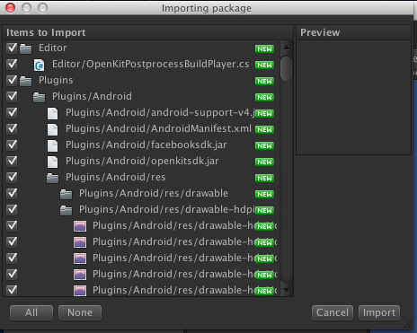
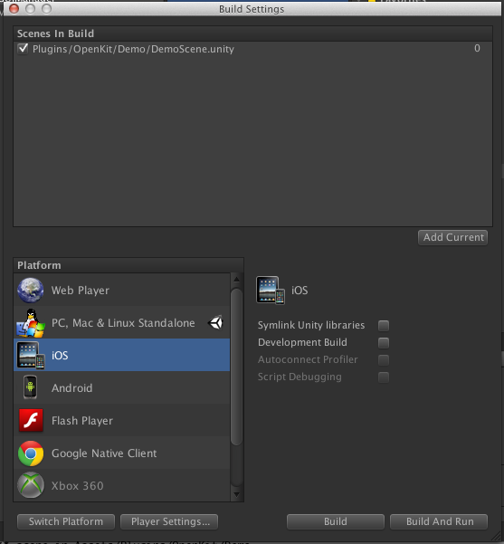
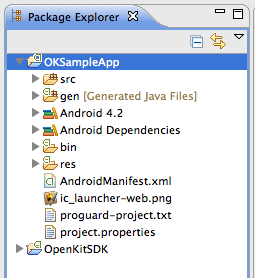

Running the Unity Demo Scene
Integrating the Unity Plugin
The OpenKit Unity Plugin is now available for download and supports both iOS and Android.
Once you have downloaded the package, import the package into your project and select all files.
Then follow the instructions here to integrate the plugin into your game. At a high level, you will need to:
- Signup for OpenKit and create an OpenKit application
- Create a Facebook application
- Set the API keys for Facebook and OpenKit in your game
- Add the OpenKit API calls
The OpenKit plugin unity package contains a demo Scene that you can use to see sample calls and try out the service.
The OpenKit unity plugin can only be used by building and running on an actual device (iOS and Android). It will not work in the Unity simulator.
You will need to create your own Facebook application for this demo scene to work correctly, and set your Facebook application ID in the correct places.
Running the demo scene
Follow these steps to run the OpenKit demo scene.
1. Import the OpenKit Unity package
Go to Assets-->Import Package-->Custom package and choose the OpenKit Unity plugin package. Import all files
2. Follow the Unity integration guide to create a Facebook application and set your Facebook application ID in Unity
3. Open up the "DemoScene" scene in Assets/Examples/OKDemoScene
4. Click on File-->Build Settings
5. Click "Add Current" to add the DemoScene to "Scenes in Build"
It should look like this:
6. Choose iOS or Android and click "Build and Run"
Note: you must build and run your game on an actual iOS or Android Device. The OpenKit plugin will not work on the iOS Simulator or the Android Emulator.
When using the demo scene, be sure to use XCode or Eclipse/LogCat to view log statements. Some of the buttons in the demo scene don't trigger any UI actions, but you can see the results in the log statements.
Troubleshooting Facebook Login Issues
If you're having issues trying out the demo scene, make sure you have configured the following correctly:
- Your bundle identifier in Unity should match the bundle identifier in your Facebook application settings for iOS and Android
- You should have added your Android debug keyhash to your Facebook app
- Your Facebook application ID is correctly specified in both your AndroidManifest.xml file, as well as the OpenKit PostBuildScript
- In your AndroidManifest.xml file, you specified your Facebook ID and made sure to keep the SLASH , for example:
<meta-data
android:name="com.facebook.sdk.ApplicationId"
android:value="\ 450333868362300"></meta-data>
Running the Android Sample App
This quickstart guide will help you set up the OpenKit SDK and try out the sample app. It assumes you have already installed the following:
- Eclipse
- Android SDK
- ADT Plugin
You can install both Eclipse and the ADT plugin from here.
Getting the SDK
Clone openkit-android. Alternatively, you can visit the link and click the 'ZIP' button on GitHub.
$ git clone https://github.com/OpenKit/openkit-android.git
Import the SDK & Sample App Into Eclipse
In Eclipse, select File > Import, then choose Existing Projects into Workspace under the General tab and click Next.

Next, browse to and select the openkit-android directory:

Eclipse should find 3 projects. Make sure OpenKitSDK,OKSampleApp, and the FacebookSDK are checked.
Click finish, and select Project > Clean. When that finishes, right click on OKSampleApp and select Run As > Android Application.
The OpenKit sample app will work on virtual devices and on Android devices that support Android 4.0.
To avoid Facebook signing issues, run the sample app on a device that does not have Facebook for Android installed (the simulator works well).
If you want to use a device that has Facebook installed, you will need to create your own Facebook application and set the sample app to use this Facebook application ID. For a walkthrough of setting up a Facebook application, see our Facebook guide here.
Using the Sample App
To get a feel for the OpenKit SDK, try the following in the sample app:
- Log into OpenKit to see user authentication
- See a demo of cloud data
- View the source of OKCloudSampleActivity.java to see the cloud data storage API in action
- View Leaderboards
- Submit a score to the Leaderboards
- View the source of "MainActivity.java" to see how to integrate the OpenKit SDK
- View the source of "SubmitScoreActivity.java" to see how to submit scores to leaderboards
- View AndroidManifest.xml to see what changes are needed and how to use your own Facebook application ID
You can also explore the OpenKitSDK project to see how it works.